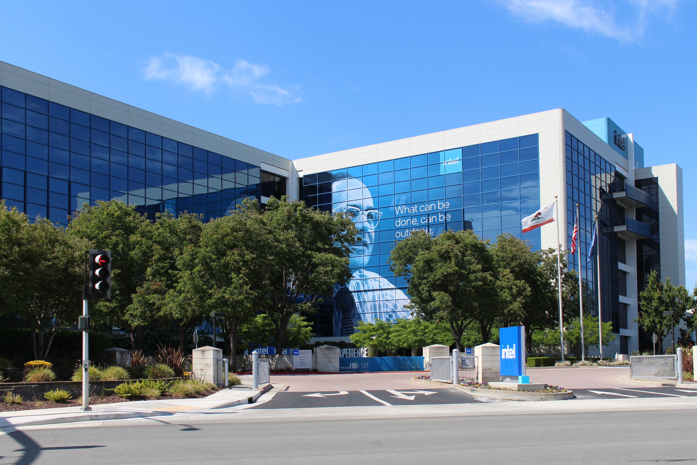
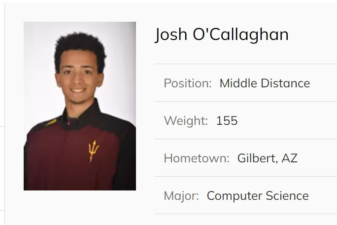
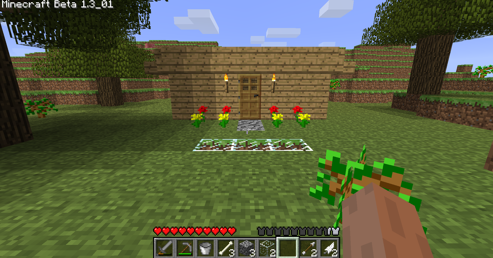
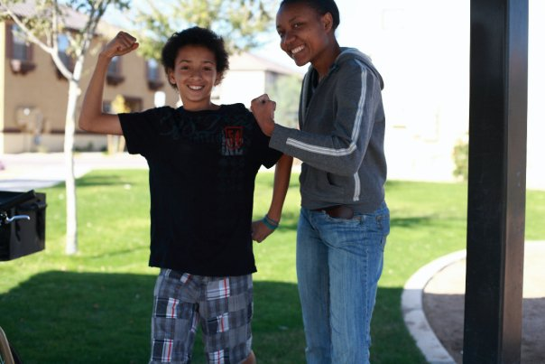

- Curr
- 2025
- 2023
- 2021
- |
- 2020
- |
- |
- |
- 2019
- 2016
- 2014
- 2011
- 1998
I currently work at Walmart as a Senior Software Engineer, focusing on database cost optimization and the integration of AI solutions to improve efficiency across large-scale operations.

I worked at Intel as a Cloud Software Engineer, collaborating with high-profile clients to enhance workload performance and cost efficiency. My responsibilities included enhancing compression pipelines, doubling throughput for Kafka workloads, and managing cloud environments across AWS, GCP, and Azure.
For two years, I specialized in FFmpeg and media optimization, working closely with media-based clients. This required expertise in transcoding techniques and leveraging the latest hardware optimizations for efficient media processing. I completed and launched Benchmarking software which improved operations by 5x.

I collaborated with the Process Engineering and Statistics team to develop automation scripts and data visualizations for the fab. Using Python, I consolidated CSV files and queried relational databases, creating interactive visualizations with Plotly.
Completing my Master's degree was a significant achievement, especially as I navigated both my accident and COVID restrictions, often studying while bedridden in the hospital. With a concentration in Big Data and Software Engineering, it was the most challenging academic experience I’ve faced, making the accomplishment even more meaningful.

God saved my life! In 2020, a motorcycle accident radically changed everything, leaving me paralyzed from the waist down. I spent four months in the hospital and another two in recovery. Despite the challenges, I continued my studies, and to this day, I am grateful for every breath.
I completed my undergraduate degree in just 3.5 years, earning a Bachelor's in Computer Science with a focus in Cybersecurity from Arizona State University. It was a challenging yet rewarding journey that fueled my passion for technology and problem-solving. Through hands-on projects and rigorous coursework, I developed skills in data structures and algorithms and software development. Proud to say—Forks Up!

I landed my first job at Intel, joining the Process Engineering team for Software Engineering where I focused on developing software solutions. My main responsibilities involved creating data visualizations to support engineering processes, enabling more informed decision-making and operational improvements.
I had the pleasure of working with American Express over the summer as part of the Big Data Platform Engineering team, where I primarily focused on managing Hadoop clusters and Kubernetes. This experience deepened my understanding of big data infrastructure and cloud-native technologies.
I served as a teaching assistant for Professor Rita Bazzi in the Principles of Programming Languages course. I helped students understand key concepts such as regular expressions (regex), syntax, semantics, and the distinctions between compilers and interpreters. It was a rewarding experience that reinforced my own understanding while supporting students in mastering complex programming principles.

Beginning my journey at Arizona State University was the start of an exciting chapter in my life. I had the privilege of competing in Track and Field at a highly competitive level, which taught me invaluable lessons in discipline, perseverance, and time management. Balancing athletics with academics in Computer Science pushed me to grow both as an athlete and a student. My time at ASU laid the foundation for everything that came after, and I'm grateful for the opportunities and experiences it provided.
In high school, I created my first website after learning HTML and CSS. It was all about soup—a fun and quirky project that, sadly, I didn't keep around. Looking back, it was a pretty tasty-looking website, and it sparked my passion for web development!

A long time ago, I had my first coding experience in Minecraft using Java. I created a mod for a 'chocolate' ore that dropped 100 diamonds—it was pretty rough, but a fun introduction to programming. Looking back, it's amazing how much both Minecraft and my coding skills have evolved since then.

A young programmer was born this year, with countless exciting experiences waiting just around the corner!